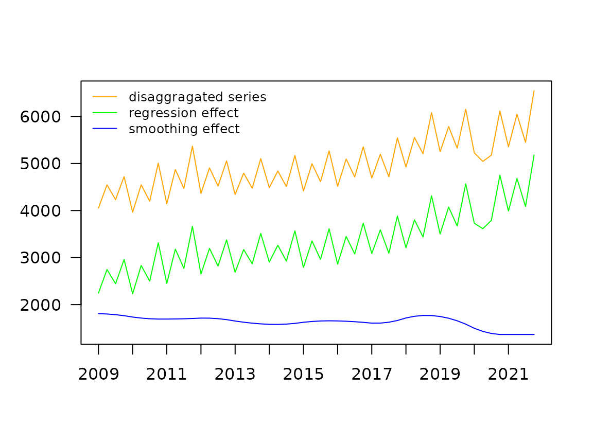

Temporal disaggregation and Benchmarking methods based on JDemetra+
Source:vignettes/rjd3bench.Rmd
rjd3bench.RmdAbstract
The package rjd3bench provides a variety of methods for temporal disaggregation, benchmarking, reconciliation and calendarization. It is part of the interface to ‘JDemetra+ 3.0’ Seasonal adjustement software. Methods of temporal disaggregation and benchmarking are used to derive high frequency time series from low frequency time series with or without the help of high frequency information. Consistency of the high frequency series with the low frequency series can be achieved by either the sum, the average, the first or last value or any other user-defined conversion mode. In addition to temporal constraints, reconciliation methods deals with contemporaneous consistency while adjusting multiple time series. Finally, calendarization method can be used when time series data do not coincide with calendar periods.
Introduction
The methods implemented in the package rjd3bench intend to bridge the gap when there is a lack of high frequency time series or when there are temporal and/or contemporaneous inconsistencies between the high frequency series and the corresponding low frequency series, the latter being the benchmark. Although this can be an issue in any fields of research dealing with time series, methods of temporal disaggregation, benchmarking, reconciliation and calendarization are mostly used in official statistics, especially in the production of macroeconomic statistics. For example, National Accounts are often compiled according to two frequencies of production: annual series, the low frequency data, based on precise and detailed sources and quarterly series, the high frequency data, which usually rely on less accurate sources but give information on a timelier basis. The use of temporal disaggregation, benchmarking, reconciliation or calendarization methods allow to achieve consistency between annual and quarterly national accounts over time.
The package is an R interface to the highly efficient algorithms and modeling developed in the official ‘JDemetra+ 3.0’ Seasonal adjustement software. It provides a wide variety of methods and intend to include those suggested in the ESS guidelines on temporal disaggregation, benchmarking and reconciliation (Eurostat, 2018).
Data
We illustrate the various methods using two sets of time series:
- The retail data set contains monthly figures over retail activity of various categories of goods and services from 1992 to 2010.
- The qna_data contains a list of two data sets. The first data set ‘B1G_Y_data’ includes three annual benchmark series which are the Belgian annual value added on the period 2009-2020 in chemical industry (CE), construction (FF) and transport services (HH). The second data set ‘TURN_Q_data’ includes the corresponding quarterly indicators which are (modified) production indicators derived from VAT statistics and covering the period 2009Q1-2021Q4.
library("rjd3toolkit") # for **retail** data
#>
#> Attaching package: 'rjd3toolkit'
#> The following objects are masked from 'package:stats':
#>
#> aggregate, mad
data("qna_data")
#> Warning in data("qna_data"): data set 'qna_data' not found
Application of methods
Temporal disaggregation
Chow-Lin, Fernandez and Litterman regression methods
Eurostat (2018) recommends the use of regression-based models for the purpose of temporal disaggregation. Among them, Chow-Lin method and its variants proposed by Fernandez and Litterman are largely used in practice. Those can be called through the temporaldisaggregation() function in the rjd3bench package.
Here is an example of code to use Fernandez variant as method to disaggregate annual value added in construction sector using a quarterly production index as indicator.
Y<-ts(qna_data$B1G_Y_data[, "B1G_FF"], frequency=1, start=c(2009, 1))
x<-ts(qna_data$TURN_Q_data[, "TURN_INDEX_FF"], frequency=4, start=c(2009, 1))
td_cl<-rjd3bench::temporaldisaggregation(Y, indicators=x, model = "Rw")
y_cl<-td_cl$estimation$disagg # the disaggregated seriesThe variable td_cl is of class ‘JD3TempDisagg’ and contains the most important information about the regression including the estimates of model coefficients and their covariance matrix, the decomposition of the disaggregated series and information about the likelihood. There exist a specific print(), summary() and plot() functions for objects of class ‘JD3TempDisagg’. print() shows the fitted model, summary() also shows extra information about the model and the likelihood. plot() displays the decomposition of the disaggregated series between regression and the smoothing effect.
summary(td_cl) # example of call to summary()
#>
#> Likelihood statistics
#>
#> Number of observations: 12
#> Number of effective observations: -1
#> Number of estimated parameters: 1
#> LogLikelihood: -82.28212
#> Standard error:
#> AIC: 166.5642
#> BIC: 166.9621
#>
#>
#> Model: Rw
#> Regression model
#> coef se t
#> var1 27.90617 5.47579 5.096281
plot(td_cl)
Model-based Denton
Denton method and variants are usually expressed in mathematical terms as a constrained minimization problem. For example, the widely used Denton proportional first difference (PFD) method is usually expressed as follows: \[ min_{y_t}\sum^n_{t=2}\biggl[\frac{y_t}{x_t}-\frac{y_{t-1}}{x_{t-1}}\biggr]^2 \] subject to the temporal constraint \[ \sum_{t} y_t = Y_y \] where \(y_t\) is the value of the estimate of the high frequency series at period t, \(x_t\) is the value of the high frequency indicator at period t and \(Y_y\) is the value of the annual low frequency series (the benchmark series) at period y.
Equivalently, the Denton PFD method can also be expressed as a statistical model considering the following state space representation \[ \begin{aligned} y_t &= \beta_t x_t \\ \beta_{t+1} &= \beta_t + \varepsilon_t \qquad \varepsilon_t \sim {\sf NID}(0, \sigma^2_{\varepsilon}) \end{aligned} \] where the annual constraint are taken care of by considering a cumulated series \(y^c_t\) instead of the original series \(y_t\). Hence, the last high frequency period (for example, the last quarter of the year) is observed and corresponds to the value of the benchmark. The value of the other periods are initially defined as missing and estimated by maximum likelihood.
This alternative representation of Denton PFD method is interesting as it allows more flexibility in the model such as the inclusion of outliers (level shift in the Benchmark to Indicator ratio) - that could otherwise induce unintended wave effects - and the possibility to fix the BI ratio (and therefore also the disaggregated) at some specific periods. Outliers and their intensity are defined by changing the value of the ‘innovation variances’. Following the principle of movement preservation inherent to Denton, the model-based Denton PFD method constitutes an interesting alternative for temporal disaggregation, giving a thorough analysis of the data (and the Benchmark-to-Indicator (BI) ratio in particular) and a clear strategy for extrapolation.
Model-based denton can be called through the denton.modelbased() function. Here is an example of code to apply it to the same data as before.
td_mbd<-rjd3bench::denton_modelbased(Y, x, outliers = list("2020-01-01"=100, "2020-04-01"=100))
y_mbd<-td_mbd$estimation$disagg
plot(td_mbd)The variable td_mbd is of class ‘JD3MBDenton’ and contains information about the disaggregated series and the BI ratio as well as their respecting errors making it possible to construct confidence intervals (see plot() function). There exist a specific print(), summary() and plot() functions for objects of class ‘JD3MBDenton’. print() shows the output available, summary() also shows extra information about the model and the likelihood. plot() displays the disaggregated series and the BI ratio together with their respective 95% confidence interval.
Benchmarking
Denton method
Denton method relies on the principle of movement preservation. There exist a few variants corresponding to different definitions of movement preservation: additive first difference (AFD), proportional first difference (PFD), additive second difference (ASD), proportional second difference (PSD), etc. The different variants can be called through the denton() function in the rjd3bench package.
Here are a few examples using the table ‘B1G_Y_data’ from qna_data:
Y<-ts(qna_data$B1G_Y_data[, "B1G_HH"], frequency=1, start=c(2009, 1))
y_d1<-rjd3bench::denton(t=Y, nfreq=4) # example of denton PFD without high frequency series
x<-y_d1+rnorm(n=length(y_d1), mean=0, sd=10)
y_d2<-rjd3bench::denton(s=x, t=Y, d=2, mul=FALSE) # example of denton ASD. Note that the default is d=1 and mul=T corresponding to denton PFDThe denton() function returns the high frequency series benchmarked with denton method.
Growth rate preservation (GRP) method
This method corresponds to the method of Cauley and Trager, using the solution proposed by Di Fonzo and Marini. It can be called through the grp() function.
Here is an example on how to use it:
y_grp<-rjd3bench::grp(s=x, t=Y)The grp() function returns the high frequency series benchmarked with grp method.
Cubic splines
Cubic splines are piecewise cubic functions that are linked together in a way to guarantee smoothness at data points. Additivity constraints are added for benchmarking purpose and sub-period estimates are derived from each spline. When a sub-period indicator (or disaggregated series) is used, cubic splines are no longer drawn based on the low frequency data but the Benchmark-to-Indicator (BI ratio) is the one being smoothed. Sub-period estimates are then simply the product between the smoothed high frequency BI ratio and the indicator.
The method can be called through the cubicspline() function. Here are a few examples on how to use it:
y_cs1<-rjd3bench::cubicspline(t=Y, nfreq=4) # example of cubic spline without high frequency series (smoothing)
x<-y_cs1+rnorm(n=length(y_cs1), mean=0, sd=10)
y_cs2<-rjd3bench::cubicspline(s=x, t=Y) # example of cubic spline with a high frequency series to benchmarkThe cubicspline() function returns the high frequency series benchmarked with cubic spline method.